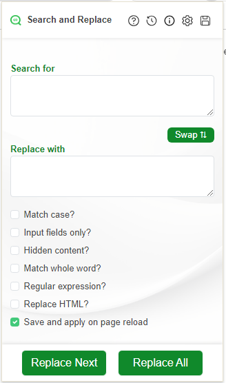

Replace Next vs. Replace All
To replace the first occurrence of the search term, press Replace Next. You can
continue to press the button until there are no more occurrences.
To replace all occurrences of the search term, press Replace All.
There is currently no undo function. If you make a mistake, you can reload the page to restore the original text. However, you will lose any unsaved changes in text editors and in text input fields.
Replacing text in editors and text fields
To replace text in text editors or input boxes you should check the
Input fields only? check box.
Setup

Replacing text anywhere on the page
To replace text that is contained within a HTML, contained within a text editor and contained
within a text field, you should check the Replace HTML? check box.

Matching the case of text
If you need to replace THIS but not This then you should use the
match case option.
The following setup will match Condo but not condo. It will
replace Condo with apartment in text fields that are visible on
the page.

Matching whole words
If you need to replace the word partial but not partially then you
should use the Match whole word? option.

Wild Cards and Regular Expressions
If you need to match a partial search term then you should check the Regular Expressions check box and specify a wild card. You will need to have a very basic knowledge of regular expressions to use this feature. I recommend regexpal for testing
Before

Setup

After

Replacing text in WordPress
WordPress is currently on version 6.6, as of March 2023. The post editor has changed significantly since this extension was created and a new setup is required to replace text in WordPress.
Setup for WordPress 6+

Setup for WordPress 5 and below
Save and apply on page reload
You can check the Save and apply on page reload? check box to save your search
and apply it on subsequent page reloads. These will take effect even after you have closed
and re-opened your browser.

Multiple Matching Rules
If multiple rules apply to the same page, the rules will be applied in order of most specific to least specific. For example:
| URL | Search | Replace | Priority |
|---|---|---|---|
| http://www.example.com/a/deeper/nested/page | Example | A | 1 - applied first |
| http://www.example.com/some/subpage | Example | B | 2 |
| http://www.example.com | Example | C | 3 - applied last |
This means that any changes applied by the first rule will be fed into the subsequent rules.
In the above example, the text Example will have been replaced by the rule
matching http://www.example.com/a/deeper/nested/page. Subsequent rules will
therefore have no effect.
You can edit the saved rules by clicking on the
in the extension popup. The URL Pattern field is a
regular
expression, which allows you to apply the same rule to many different websites.
Reporting Issues
Input fields only? before performing a search and replace.
If you find a bug, please provide a detailed report on the Chrome Extension Store or on GitHub.
Please rate ★★★★★ on Chrome Store if the extension helps you!